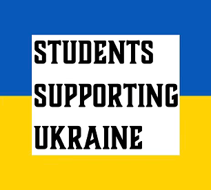
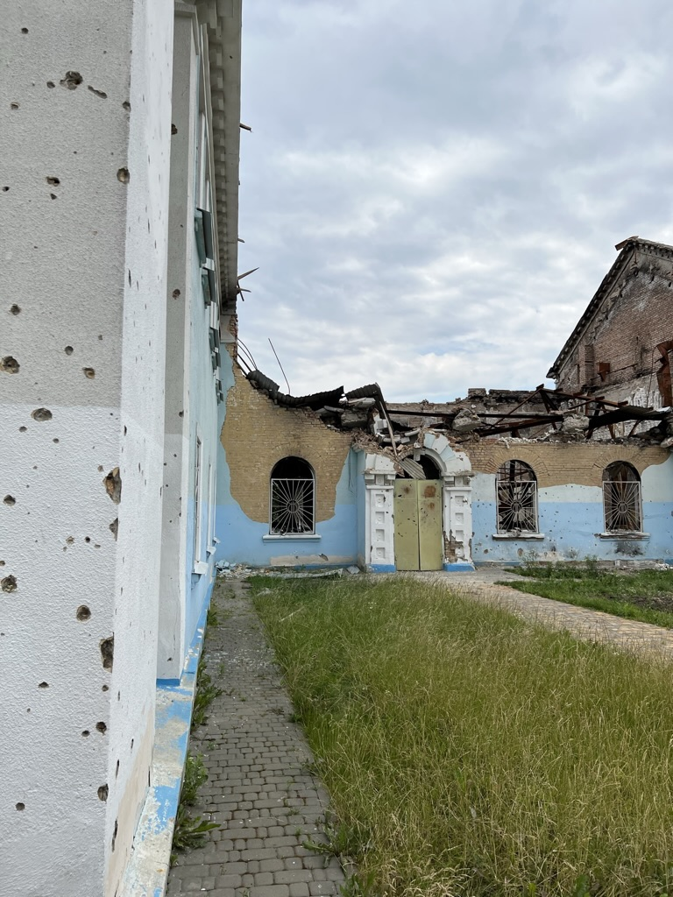
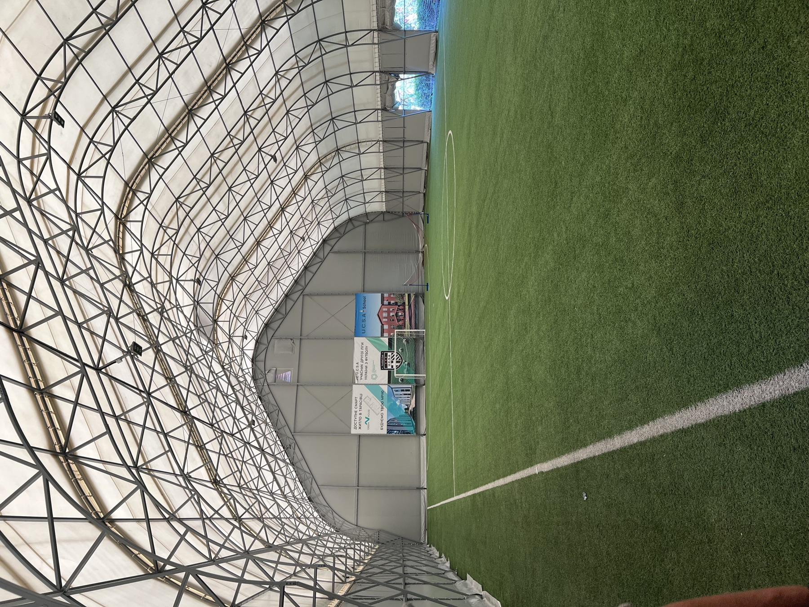
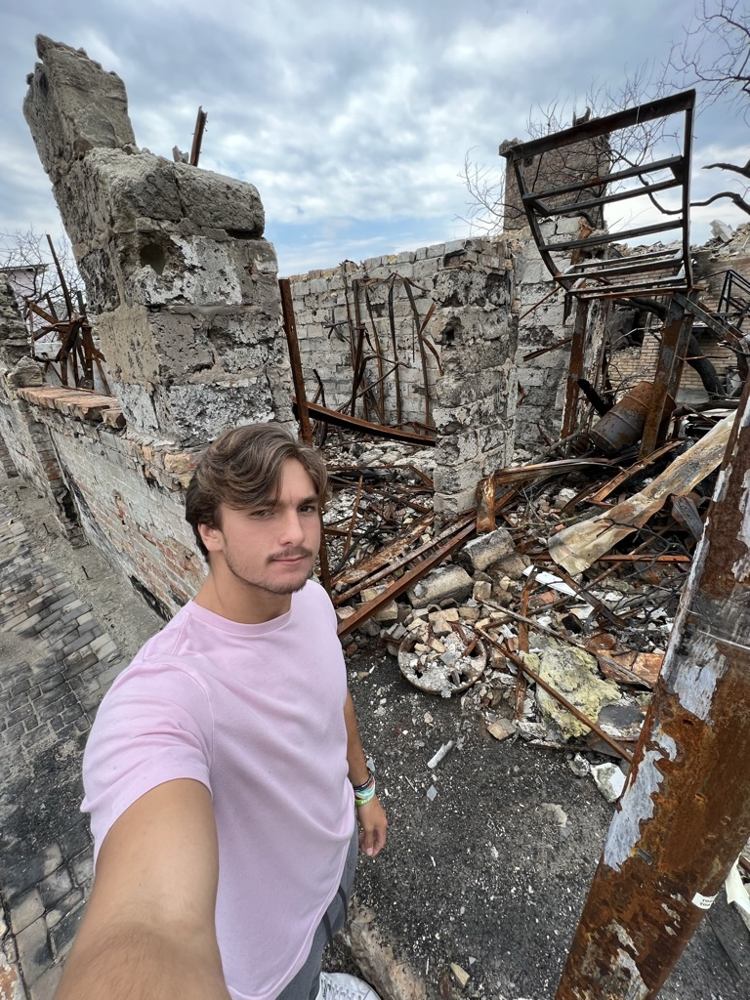
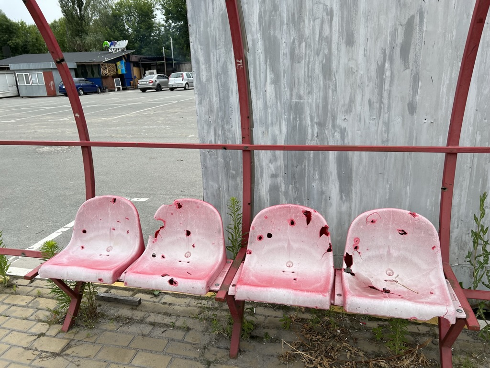
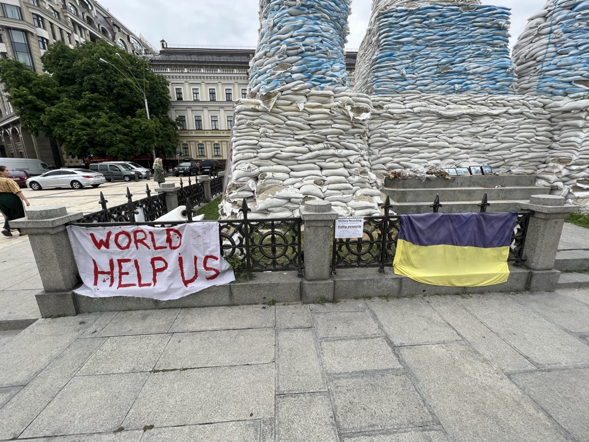
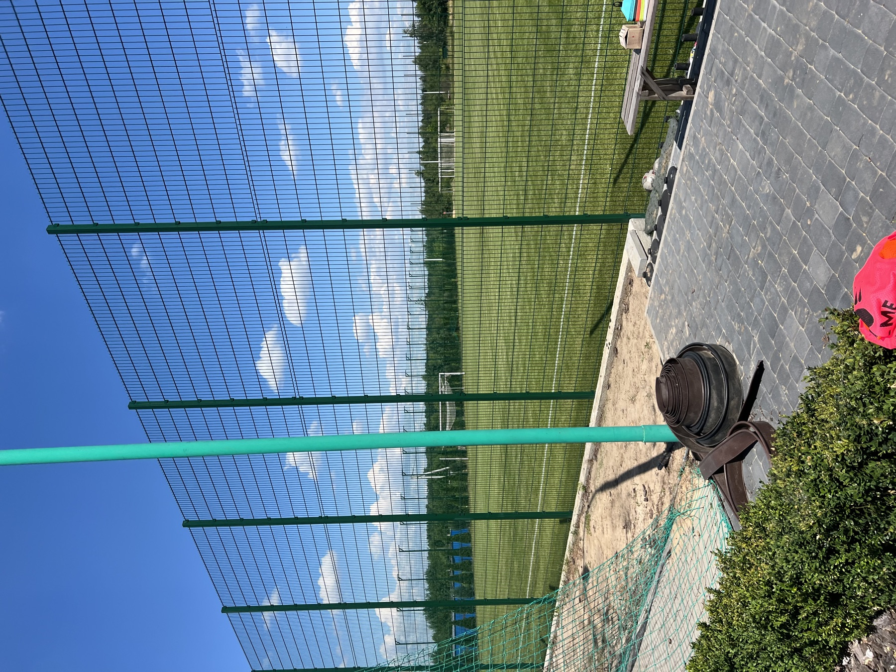
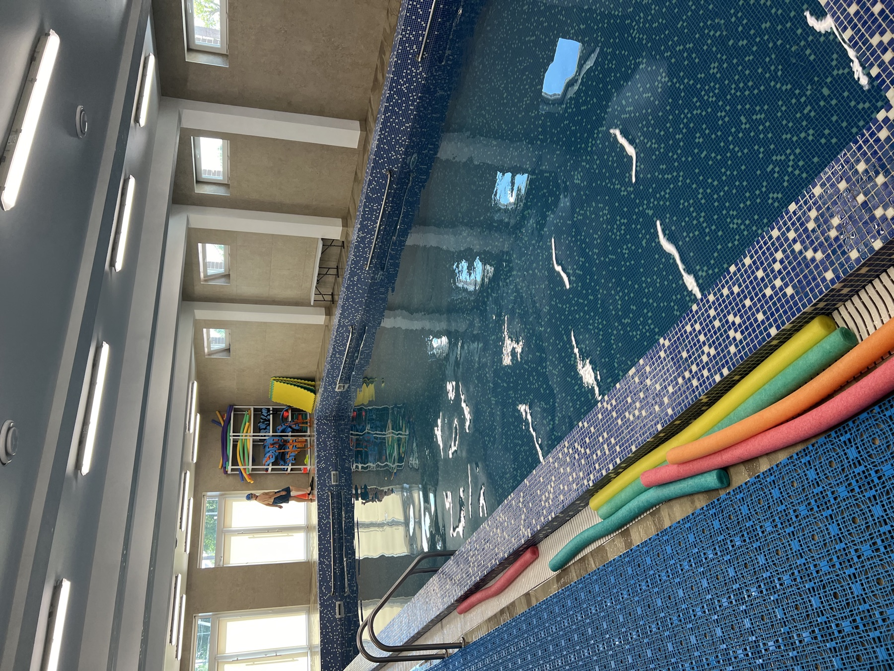
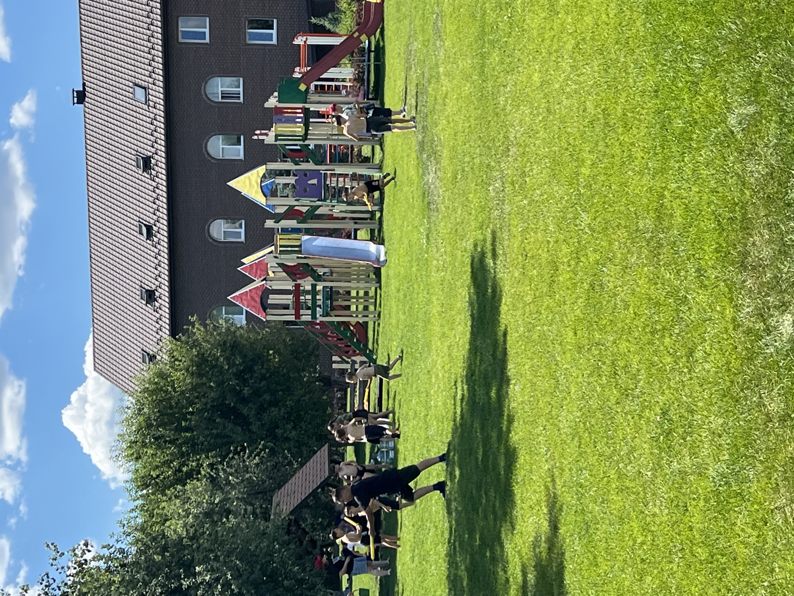
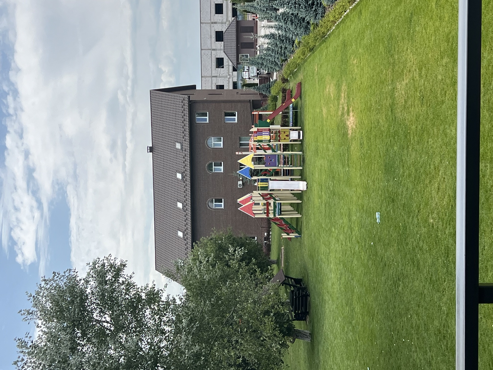

Students Supporting Ukraine
Aid buys a week. A school buys a future.

studentssupportingukraine.org ↗


Kyiv Oblast · Summer 2022 — what the kids of U.C.S.A. fled
I drove those roads — Bucha, Irpin, the bridges blown to slow the advance — the summer I worked in Ternopil. You don't forget what a shelled building looks like.



Back at Stanford, I founded Students Supporting Ukraine — a student organization built on a simple premise: the war's youngest victims shouldn't have to wait for governments to act. Over three years I led grassroots fundraising to fund a $2,000,000 project — speaking at churches, schools, and events alongside speakers from the Ukrainian President's Office.
That money needed somewhere permanent to land. The answer was the Ukrainian Christian Sports Academy — a school in Kyiv, Ukraine, built for refugee youth from Ukraine's Eastern front.
The school
The kids U.C.S.A. serves fled the hardest-hit regions of the war. The school combines education with the thing I saw work in Ternopil: sport as structure, structure as resilience. Classrooms rebuild what shelling interrupted; the pitch rebuilds what fear took.




Of everything Students Supporting Ukraine funded, this is the piece designed to outlast the war — and the clearest proof of the premise the whole effort started with: secure Ukraine's children and you secure Ukraine's future.